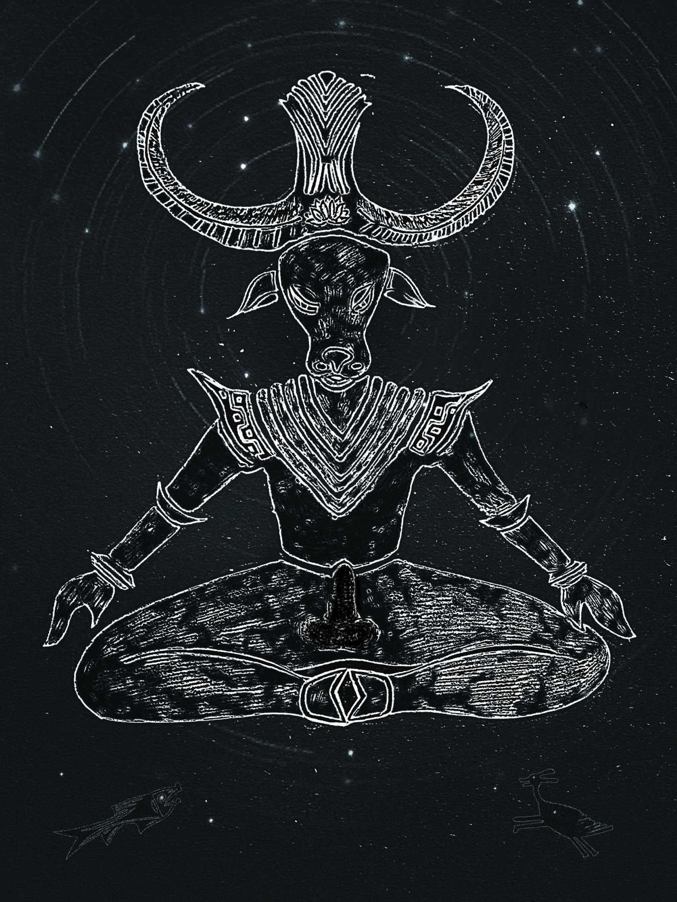
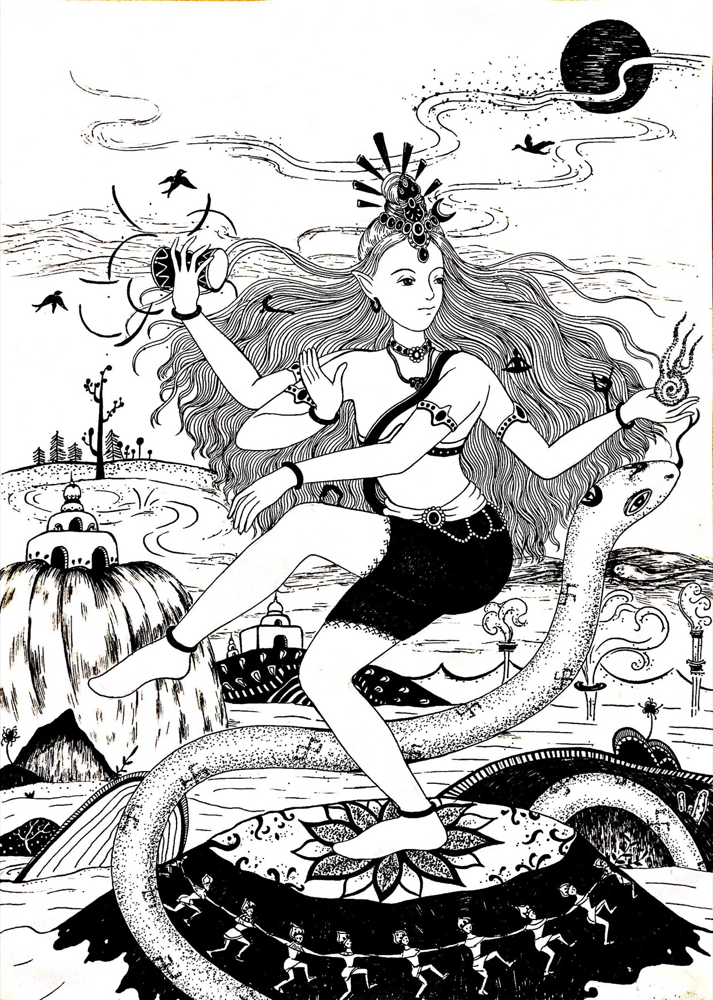

YOGA SANSKRIT / 01
ART GALLERY / YOGA SANSKRIT
这一组内插围绕瑜伽、梵文学习、体式、身体部位、数字、动物名与唱颂主题展开，把知识章节转化成可阅读的画面。
YOGA SANSKRIT / 01
YOGA SANSKRIT / 02
YOGA SANSKRIT / 03
YOGA SANSKRIT / 04
YOGA SANSKRIT / 05

YOGA SANSKRIT / 06
YOGA SANSKRIT / 07

YOGA SANSKRIT / 08
YOGA SANSKRIT / 09
YOGA SANSKRIT / 10
YOGA SANSKRIT / 11
YOGA SANSKRIT / 12